- Always wear a clean uniform.
- A hat and safety shoes must be worn.
| Last Modified: 10-07-2025 | 6.11:8.1.0 | Doc ID: RM100000002HFUP |
| Model Year Start: 2024 | Model: Tacoma | Prod Date Range: [12/2023 - ] |
| Title: INTRODUCTION: REPAIR INSTRUCTION: PRECAUTION; 2024 - 2026 MY Tacoma Tacoma HV [12/2023 - ] | ||
PRECAUTION
BASIC REPAIR HINT
(a) HINTS ON OPERATIONS

|
1 |
Attire |
|
|
2 |
Vehicle protection |
Prepare a grille cover, fender cover, seat cover and floor mat before starting work. |
|
3 |
Safety procedures |
|
|
4 |
Preparation of tools and measuring equipment |
Before starting work, prepare a tool stand, SST, measuring equipment, oil, and any replacement parts required. |
|
5 |
Removal and installation, disassembly and assembly operations |
|
|
6 |
Removed parts |
|
|
7* |
Checks to perform after work is finished |
|
CAUTION:
*: Be sure to perform these checks properly, not performing these checks properly after finishing work can lead to a serious accident or injury.
(b) JACKING UP AND SUPPORTING THE VEHICLE
(1) Care must be taken when jacking up and supporting the vehicle. Be sure to lift and support the vehicle at the proper locations.
(c) PRECOATED PARTS

|
*a |
Seal Lock Adhesive |
(1) Precoated parts are bolts and nuts that are coated with seal lock adhesive at the factory.
(2) If a precoated part is retightened, loosened or moved in any way, it must be recoated with the specified adhesive.
(3) When reusing a precoated part, clean off the old adhesive and dry the part with compressed air. Then apply new seal lock adhesive appropriately to that part.
(4) Some seal lock agents harden slowly. You may have to wait for the seal lock adhesive to harden.
(d) SMALL-HEAD BOLTS
(1) Small-head bolts are bolts with a smaller bolt head than standard bolts with the same thread diameter and flange diameter.
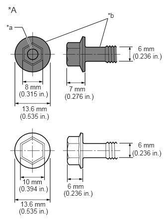|
*A |
Example: M6 Bolt |
|
*a |
Ring Mark |
|
*b |
Black |
(2) Although the size of the bolt head is smaller than a standard bolt, the tightening torque remains unchanged as the thread diameter and flange diameter are not different. Make sure to tighten all small-head bolts to the correct torque indicated in the repair manual.
(3) As the force applied to the sides of the head of a small-head bolt is higher than that of a standard bolt when the same tightening torque is used, the height of the bolt head has been increased to ensure its strength.
(4) For identification purposes, small-head bolts are black and the bolt head is marked with a ring.
(e) GASKETS
(1) When necessary, use a sealant on gaskets to prevent leaks.
(f) BOLTS, NUTS AND SCREWS
(1) Carefully follow all of the specifications for tightening torque. Always use a torque wrench.
(2) Make sure that no foreign matter (burrs, paint, etc.) gets trapped under the heads of the bolts and nuts when tightening them.
(g) FUSES

|
*a |
NG |
|
*b |
OK |
(1) When inspecting a fuse, check that the wire of the fuse is not broken.
(2) If the wire of a fuse is broken, confirm that there are no shorts in its circuit.
(3) When a fuse is replaced, a fuse with the same amperage rating must be used.
|
Illustration |
Symbol |
Part Name |
Abbreviation |
|---|---|---|---|
 |
 |
FUSE |
FUSE |
 |
 |
MEDIUM CURRENT FUSE |
M-FUSE |
 |
 |
HIGH CURRENT FUSE |
H-FUSE |
 |
 |
FUSIBLE LINK |
FL |
 |
 |
CIRCUIT BREAKER |
CB |
 |
|
FUSIBLE LINK |
FL |
(h) CLIPS
(1) The removal and installation methods of typical clips used for vehicle body parts are shown in the table below.
HINT:
If clips are damaged during a procedure, always replace the damaged clips with new ones.
|
Shape (Example) |
Removal/Installation |
|---|---|
 |
Remove the clips with a clip remover or pliers. 
|
 |
Remove the clips using a clip remover or a screwdriver with its tip wrapped with protective tape. 
|
 |
Remove the clips with a wide scraper to prevent panel damage. 
|
 |
Remove the clips by pushing the center pin through and pulling out the shell. 
|
 |
Remove the clips by unscrewing the center pin and prying out the shell. 
|
 |
Remove the clips by prying out the pin using a screwdriver with its tip wrapped with protective tape and then prying out the shell. 
|
(i) CLAWS
(1) The removal and installation methods of typical claws used for vehicle body parts are shown in the table below.
HINT:
If claws are damaged during a procedure, always replace the cap or cover that has damaged claws with a new one.
|
Shape (Example) |
Illustration/Procedures |
|---|---|
 |
Disengage the claws using a screwdriver with its tip wrapped with protective tape to remove the caps or covers. 
|
 |
Disengage the claws using a screwdriver with its tip wrapped with protective tape to remove the caps or covers. 
|
 |
Disengage the claws using a screwdriver with its tip wrapped with protective tape to remove the caps or covers. 
|
(j) HINGES, GUIDES, CLAMPS, PINS, ETC.
(1) The removal and installation methods of typical hinges, guides, clamps and pins used for vehicle body parts are shown in the table below.
HINT:
If clamps are damaged during a procedure, always replace the cap or cover that has damaged clamps with a new one.
|
Shape (Example) |
Removal/Installation |
|---|---|
 |
Pull away from the pins to disengage. 
|
 |
Disengage the pins by pulling. 
|
 |
Remove the clamps with pliers. 
|
 |
Disengage the pins by pulling. 
|
(k) REMOVAL AND INSTALLATION OF VACUUM HOSES
(1) To disconnect a vacuum hose, pull and twist it from the end of the hose. Do not pull it from the middle of the hose as this may damage the hose.

|
*a |
Incorrect |
|
*b |
Correct |
(2) When disconnecting vacuum hoses, use tags to identify where they should be reconnected.

(3) After completing any hose related repairs, double-check that the vacuum hoses are properly connected. The label under the hood shows the proper layout.
(4) When using a vacuum gauge, never force the hose onto a connector that is too large. If a hose has been stretched, air may leak. Use a step-down adapter if necessary.
(l) TORQUE WHEN USING TORQUE WRENCH WITH EXTENSION TOOL
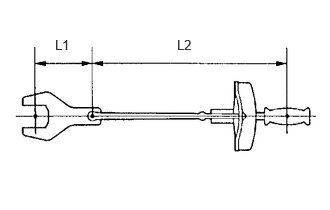(1) Use the formula below to calculate special torque values for situations where SST or an extension tool is combined with a torque wrench.
Formula:
T' = (L2/(L1 + L2))*T
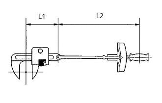|
T' |
Reading of torque wrench (N*m (kgf*cm, ft.*lbf)) |
|
T |
Torque (N*m (kgf*cm, ft.*lbf)) |
|
L1 |
Length of SST or extension tool (cm (in.)) |
|
L2 |
Length of torque wrench (cm (in.)) |
NOTICE:
If an extension tool or SST is combined with a torque wrench and used to tighten to a torque specification in this manual, the actual torque will be excessive and parts will be damaged.
PRECAUTIONS FOR HIGH-VOLTAGE CIRCUIT INSPECTION AND SERVICE (for HEV Model)
CAUTION:
for Nickel Metal Hydride Battery:
- This vehicle has a hybrid system that operates at high voltages. The hybrid system uses an HV battery that contains an electrolyte which is a strong alkali solution that includes potassium hydroxide. Be sure to follow the instructions in this manual to handle the system correctly. Failure to do so may result in serious injury or electrocution.
for Lithium-ion Battery:
- This vehicle has a hybrid system that operates at high voltages. The hybrid system uses an HV battery which contains a carbonic acid ester based organic electrolyte. Be sure to follow the instructions in this manual to handle the system correctly. Failure to do so may result in serious injury or electrocution.
(a) Technicians must undergo special training to be able to service and inspect the high-voltage system.
(b) All high-voltage wire harnesses and connectors are colored orange. The HV battery and other high-voltage components have "High Voltage" caution labels. Do not carelessly touch these wires or components.
(c) When there is a problem with a wire harness or connector of a high-voltage circuit, repairs to the harness or connector should not be attempted. Replace damaged or malfunctioning high-voltage wire or connector.
(d) Before inspecting or servicing the high-voltage system, be sure to follow all safety measures, such as wearing insulated gloves and removing the service plug grip, to prevent electrocution. Carry the removed service plug grip in your pocket to prevent other technicians from accidentally installing it while you are servicing the vehicle.
NOTICE:
- After removing the service plug grip, do not turn the ignition switch ON (READY), unless instructed by the repair manual, as this may cause a malfunction.
- After turning the ignition switch off, waiting time may be required before disconnecting the cable from the negative (-) auxiliary battery terminal. Therefore, make sure to read the disconnecting the cable from the negative (-) auxiliary battery terminal notices before proceeding with work.
(e) Before using insulated gloves, be sure to check them for cracks, tears and other types of damage by performing the following procedure.
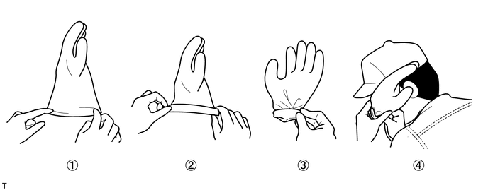- Place the glove on its side.
- Roll the opening up 2 or 3 times.
- Fold the opening in half to close it.
- Confirm that there are no air leaks.
(f) When servicing the vehicle, do not carry metal objects like mechanical pencils or rulers that can be dropped accidentally and cause a short circuit.
(g) Before touching a bare high-voltage terminal, put on insulated gloves and use an electrical tester to make sure that the terminal voltage is 0 V.
(h) After disconnecting or exposing a high-voltage connector or terminal, insulate it immediately using insulating tape.
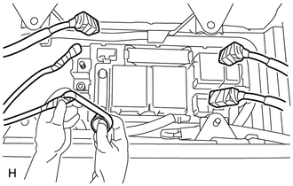(i) Bolts and nuts for high-voltage terminals should be tightened to the specified torque. Both insufficient and excessive torque can cause a malfunction.
(j) Use the "CAUTION: HIGH VOLTAGE DO NOT TOUCH" sign to notify other technicians that the high-voltage system is being inspected and/or repaired.
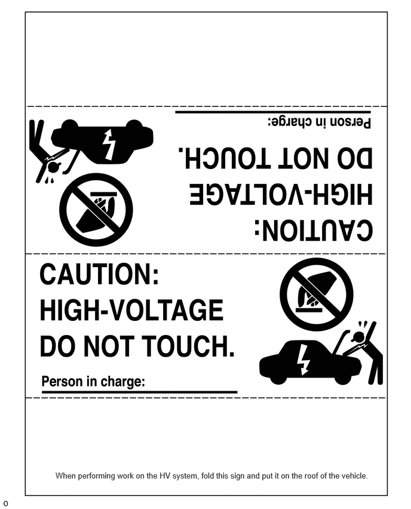(k) After servicing the high-voltage system and before reinstalling the service plug grip, make sure that you have not left any parts or tools inside the vehicle, that the high-voltage terminals are firmly tightened, and that the connectors are correctly connected.
(l) When performing work involving a high-voltage circuit, use either a tool wrapped with vinyl insulation tape or an insulated tool.
(m) When installing hybrid system components such as the HV battery, make sure that the polarity of all connections is correct.
PRECAUTIONS TO BE OBSERVED WHEN PERFORMING INSPECTION OR SERVICE IN ENGINE COMPARTMENT (for HEV Model)
(a) The vehicle automatically starts and stops the engine on and off when the READY light in the combination meter assembly is illuminated. To avoid injury, make sure that both the indicator on the ignition switch and the READY light in the combination meter assembly are off.
ACTIONS TO BE TAKEN FOR VEHICLES DAMAGED BY IMPACT (for Hydrogen System)
CAUTION:
- Hydrogen gas is a colorless, odorless and flammable gas. 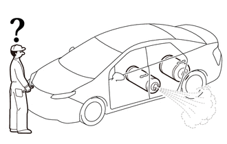
- Because the flammable concentration range is wide (4 - 74.5%) and the energy required for ignition is extremely low, even static electricity can easily cause hydrogen gas to ignite. While working on the vehicle, if the sound of hydrogen gas leaking (a loud hissing sound) can be heard, measure the hydrogen gas concentration with a hydrogen concentration detector. If the hydrogen gas concentration near the vehicle is more than 4%, there is a danger that the hydrogen could ignite, so move away from the vehicle immediately.
- Even after the vehicle is stopped, there is still hydrogen gas remaining in hydrogen equipment such as the hydrogen tanks and in the hydrogen piping. To avoid fires or explosions, do not cut or destroy hydrogen equipment or hydrogen piping. 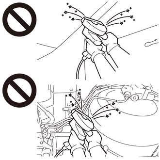
- Because of the danger of hydrogen igniting, when a hydrogen leak is present, do not use electrical devices or rescue devices that could generate static electricity.
(a) In case of a vehicle fire
(1) A fuel cell vehicle (FCEV) contains compressed hydrogen gas.
(2) When spraying water on the fire, prepare for the hydrogen to ignite, and keep your distance from the vehicle while spraying water.
(3) In particular, spray a large amount of water on the hydrogen tanks under the floor at the rear of the vehicle to keep them cool.
(4) If the hydrogen has ignited, completely extinguishing the fire could cause unburned hydrogen gas to collect, which could result in a secondary explosion. To prevent this, spray water to keep the fire from spreading to the surroundings, and wait for the fire to burn itself out (when all the fuel has been expended).
(5) To prevent the hydrogen tanks from exploding due to abnormal temperature / pressure increase, pressure relief device designed into the hydrogen tanks will open when the temperature exceeds 110°C, causing the hydrogen gas inside the tanks to be discharged toward the rear of the vehicle.
(6) Although pure hydrogen gas burns with a nearly colorless flame that is very difficult to see, in the case of a vehicle fire, the flames will be mixed with other flames from nearby combustible materials, making them easier to see.
(7) A peculiar characteristic of hydrogen flame is that while the temperature of the flame itself is extremely high, because the flame emits very little radiant heat, it is difficult to feel the heat of the fire when approaching it.
(b) Make sure that the sound of hydrogen gas leaking (a loud hissing sound) cannot be heard.
(1) When approaching the vehicle, approach from the front side of the vehicle.
(2) When a leaking sound can be heard, there is a danger of igniting the hydrogen, so move away from the vehicle immediately.
(3) Check that the leaking sound has stopped before moving on to the following procedure.
(c) Using a hydrogen concentration detector, measure the hydrogen concentration around the vehicle to make sure that it does not exceed 4%.
(1) If the concentration exceeds 4%, there is a danger of igniting the hydrogen, so move away from the vehicle immediately.
(2) If a fan or blower is available, blow air to reduce the hydrogen concentration. When approaching the vehicle, approach from the upwind side.
(3) Periodically measure the hydrogen concentration, and make sure that the hydrogen concentration does not exceed 4% before moving on to the following procedure.
ACTIONS TO BE TAKEN FOR VEHICLES DAMAGED BY IMPACT (for HEV Model)
CAUTION:
for Nickel Metal Hydride Battery:
- This vehicle has a hybrid system that operates at high voltages. The hybrid system uses an HV battery that contains an electrolyte which is a strong alkali solution that includes potassium hydroxide. Be sure to follow the instructions in this manual to handle the system correctly. Failure to do so may result in serious injury or electrocution.
for Lithium-ion Battery:
- This vehicle has a hybrid system that operates at high voltages. The hybrid system uses an HV battery which contains a carbonic acid ester based organic electrolyte. Be sure to follow the instructions in this manual to handle the system correctly. Failure to do so may result in serious injury or electrocution.
(a) Items to be prepared for the accident site
for Nickel Metal Hydride Battery:
- Protective clothing (insulated gloves, rubber gloves, goggles and safety shoes)
- 20 liters (21.1 US qts, 17.6 Imp. qts) saturated boric acid solution (obtain 800 g (1.76 lb) of boric acid powder, put it into a container, and dissolve it in water)
- Red litmus paper
- ABC fire extinguisher (effective against both oil flames and electrical flames)
- A shop rag or piece of cloth (for wiping up the neutralized electrolyte)
- Insulating tape (for insulating cables)
- Electrical tester
for Lithium-ion Battery:
- Protective clothing (insulated gloves, rubber gloves, goggles, organic solvent mask, safety shoes and solvent resistant apron (for organic solvent))
- Soap
- ABC fire extinguisher (effective against both oil flames and electrical flames)
- A shop rag or piece of cloth (for wiping up electrolyte)
- Insulating tape (for insulating cables)
- Electrical tester
(b) Actions to be taken at the accident site
CAUTION:
for Nickel Metal Hydride Battery:
- Do not touch any bare cables that could be high-voltage cables. If a cable must be touched or if accidental contact is possible, wear insulated gloves and insulate the cable using insulating tape.
- If the vehicle catches on fire, use an ABC fire extinguisher to extinguish the fire. Trying to extinguish a fire using only a small amount of water can be more dangerous than effective. Use a substantial amount of water or wait for firefighters.
- Visually check the HV battery and the surrounding area for any electrolyte leakage. Do not touch any leaked liquid because it could be highly alkaline electrolyte.
- If the vehicle is submerged in water, work on the vehicle only after the vehicle has been pulled out of the water.
for Lithium-ion Battery:
- Do not touch any bare cables that could be high-voltage cables. If a cable must be touched or if accidental contact is possible, wear insulated gloves and insulate the cable using insulating tape.
- If the vehicle catches on fire, use an ABC fire extinguisher to extinguish the fire. Trying to extinguish a fire using only a small amount of water can be more dangerous than effective. Use a substantial amount of water or wait for firefighters.
- Visually check the HV battery and surrounding area for any electrolyte leakage. Do not touch any leaked liquid because it could be carbonic acid ester based organic electrolyte.
- The electrolyte is flammable. Keep all ignition sources such as open flame and hot objects away from the electrolyte.
- Electrolyte leaks may cause acute poisoning if a high concentration of the vapor from the electrolyte is inhaled. In the case of inhalation, move the affected person to a place with ample fresh air and let them lie quietly. Seek medical care.
- If the vehicle is submerged in water, do not touch any of the high-voltage components or cables, including the service plug grip, as doing so poses an electrocution hazard. Work on the vehicle only after the vehicle has been pulled out of the water.
- If the electrolyte comes in contact with your skin, wash the area thoroughly with soap and plenty of water, and seek medical care. If the electrolyte comes in contact with an article of clothing, take it off immediately. Prolonged contact with the electrolyte may cause skin irritation.
- If the electrolyte comes in contact with your eyes, call out loudly for help. Do not rub your eyes. Immediately flush them with a large amount of water for at least 15 minutes and seek medical care.
- If electrolyte is swallowed, seek medical care immediately. Do not induce vomiting, unless instructed by the doctor.
(1) Check the vicinity of the HV battery for any leakage of the electrolyte.
CAUTION:
for Nickel Metal Hydride Battery:
- Do not touch any leaked liquid because it could be highly alkaline electrolyte. Wearing rubber gloves and goggles, neutralize the liquid with saturated boric acid solution and then apply red litmus paper to the liquid. Check that the paper does not turn blue. Wipe up the neutralized electrolyte with a shop rag or piece of cloth.
- If the electrolyte comes in contact with your skin, use a saturated boric acid solution or a large amount of water to wash it off. If the electrolyte comes in contact with an article of clothing, take it off immediately.
- If the electrolyte comes in contact with your eyes, call out loudly for help. Do not rub your eyes. Wash them immediately with a large amount of water and seek medical care.
- If electrolyte is swallowed, seek medical care immediately. Do not induce vomiting, unless instructed by the doctor.
for Lithium-ion Battery:
- Do not touch any leaked liquid because it could be carbonic acid ester based organic electrolyte. If contact is unavoidable, wipe up the liquid using a cloth while wearing rubber gloves, goggles and an organic solvent mask. Do not leave electrolyte-contaminated cloths unattended. Place contaminated cloths in an appropriate airtight container and dispose of them according to local regulations.
(2) If damage to any of the high-voltage components and cables is suspected, cut the high-voltage circuit using the following procedure.
CAUTION:
Be sure to wear insulated gloves, goggles and safety shoes.
(3) Turn the ignition switch off.
HINT:
If the ignition switch cannot be turned off, remove the EFI No.2 Fuse from the No. 2 engine room relay block and junction block assembly.
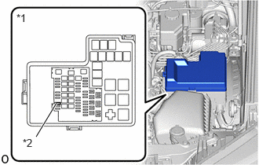|
*1 |
No. 2 engine room relay block and junction block assembly |
|
*2 |
EFI No.2 Fuse |
(4) Disconnect the cable from the negative (-) auxiliary battery terminal.
(5) While wearing insulated gloves, remove the service plug grip.
NOTICE:
After removing the service plug grip, do not turn the ignition switch ON (READY), unless instructed by the repair manual because this may cause a malfunction.
(c) Moving the damaged vehicle
NOTICE:
When towing the vehicle, refer to the appropriate precautions for towing for the vehicle.
If any of the following conditions are met, tow the vehicle using a tow truck.
- One or more of the high-voltage components and cables are damaged.
- Components related to driving, the hybrid transaxle, the hybrid transmission or the fuel system are damaged.
- The master warning light is on.
- The READY light does not come on when attempting to turn the ignition switch ON (READY).
CAUTION:
Before towing the vehicle using a tow truck, disconnect the cable from the negative (-) auxiliary battery terminal and remove the service plug grip.
NOTICE:
Perform the following procedure if the master warning light turns on, or there are abnormal noises, unusual smells or strong vibrations while driving:
(1) Park the vehicle in a safe place.
(2) Apply the parking brake, and then move the shift lever to P. (w/o Electronic Shift Lever System)
(3) Apply the parking brake, push the P position switch and confirm that park (P) has been selected. (w/ Electronic Shift Lever System)
(4) Turn the ignition switch off, and disconnect the cable from the negative (-) auxiliary battery terminal.
(5) While wearing insulated gloves, remove the service plug grip.
(d) Actions required after moving the damaged vehicle
(1) Procedure
for Nickel Metal Hydride Battery:
- If you see any liquid on the road surface, it could be highly alkaline electrolyte. Wearing rubber gloves and goggles, neutralize the electrolyte with saturated boric acid solution, and then apply red litmus paper to the liquid. Check that the paper does not turn blue. Wipe up the neutralized liquid with a shop rag or piece of cloth.
for Lithium-ion Battery:
- If there is liquid on the road surface, it could be carbonic acid ester based organic electrolyte. Wipe up the liquid using a cloth while wearing rubber gloves, goggles and an organic solvent mask. Do not leave electrolyte-contaminated cloths unattended. Place contaminated cloths in an appropriate airtight container and dispose of them according to local regulations.
(e) Items to be prepared (when repairing a damaged vehicle)
for Nickel Metal Hydride Battery:
- Protective clothing (insulated gloves, rubber gloves, goggles and safety shoes)
- 20 liters (21.1 US qts, 17.6 Imp. qts) saturated boric acid solution (obtain 800 g (1.76 lb) of boric acid powder, put it into a container, and dissolve it in water)
- Red litmus paper
- A shop rag or piece of cloth (for wiping up the neutralized electrolyte)
- Insulating tape (for insulating cables)
- Electrical tester
for Lithium-ion Battery:
- Protective clothing (insulated gloves, rubber gloves, goggles, organic solvent mask, safety shoes and solvent resistant apron (for organic solvent))
- Soap
- ABC fire extinguisher (effective against both oil flames and electrical flames)
- A shop rag or piece of cloth (for wiping up electrolyte)
- Insulating tape (for insulating cables)
- Electrical tester
(f) Precautions to be observed when servicing a damaged vehicle
CAUTION:
Always follow instructions to ensure safety.
(1) Wear insulated or rubber gloves, goggles, and safety shoes.
(2) Check the HV battery and immediate area for any electrolyte leakage.
CAUTION:
for Nickel Metal Hydride Battery:
- Do not touch any bare cables that could be high-voltage cables. If a cable must be touched or if accidental contact is possible, wear insulated gloves and insulate the cable using insulating tape.
- Do not touch any leaked liquid because it could be highly alkaline electrolyte. Wearing rubber gloves and goggles, neutralize the liquid with saturated boric acid solution and then apply red litmus paper to the liquid. Check that the paper does not turn blue. Wipe up the neutralized electrolyte with a shop rag or piece of cloth.
- If the electrolyte comes in contact with your skin, use a saturated boric acid solution or a large amount of water to wash it off. If the electrolyte comes in contact with an article of clothing, take it off immediately.
- If the electrolyte comes in contact with your eyes, call out loudly for help. Do not rub your eyes. Wash them immediately with a large amount of water and seek medical care.
- If electrolyte is swallowed, seek medical care immediately. Do not induce vomiting, unless instructed by the doctor.
for Lithium-ion Battery:
- Do not touch any bare cables that could be high-voltage cables. If a cable must be touched or if accidental contact is possible, wear insulated gloves and insulate the cable using insulating tape.
- Visually check the HV battery and surrounding area for any electrolyte leakage. Do not touch any leaked liquid because it could be carbonic acid ester based organic electrolyte.
- The electrolyte is flammable. Keep all ignition sources such as open flame and hot objects away from the electrolyte.
- Electrolyte leaks may cause acute poisoning if a high concentration of the vapor from the electrolyte is inhaled. In the case of inhalation, move the affected person to a place with ample fresh air and let them lie quietly. Seek medical care.
- If the electrolyte comes in contact with your skin, wash the area thoroughly with soap and plenty of water, and seek medical care. If the electrolyte comes in contact with an article of clothing, take it off immediately. Prolonged contact with the electrolyte may cause skin irritation.
- If the electrolyte comes in contact with your eyes, call out loudly for help. Do not rub your eyes. Immediately flush them with a large amount of water for at least 15 minutes and seek medical care.
- If electrolyte is swallowed, seek medical care immediately. Do not induce vomiting, unless instructed by the doctor.
- Do not touch any leaked liquid because it could be carbonic acid ester based organic electrolyte. If contact is unavoidable, wipe up the liquid using a cloth while wearing rubber gloves, goggles and an organic solvent mask. Do not leave electrolyte-contaminated cloths unattended. Place contaminated cloths in an appropriate airtight container and dispose of them according to local regulations.
(3) Do not touch any bare cables that could be high-voltage cables. If a cable must be touched or if accidental contact is possible, perform the following: 1) put on insulated gloves and goggles, 2) measure the voltage between the cable and body ground using an electrical tester, and 3) insulate the cable using insulating tape.
(4) If damage to any of the high-voltage components and cables is suspected, cut the high-voltage circuit using the following procedure.
CAUTION:
Do not touch any bare cables that could be high-voltage cables. If a cable must be touched or if accidental contact is possible, wear insulated gloves and insulate the cable using insulating tape.
(5) Turn the ignition switch off.
HINT:
If the ignition switch cannot be turned off, remove the EFI No.2 Fuse from the No. 2 engine room relay block and junction block assembly.
|
*1 |
No. 2 engine room relay block and junction block assembly |
|
*2 |
EFI No.2 Fuse |
(6) Disconnect the cable from the negative (-) auxiliary battery terminal.
(7) While wearing insulated gloves, remove the service plug grip.
NOTICE:
After removing the service plug grip, do not turn the ignition switch ON (READY), unless instructed by the repair manual because this may cause a malfunction.
(g) Precautions to be observed when towing
(1) Tow the damaged vehicle with its front and rear wheels lifted off the ground.
CAUTION:
Towing the damaged vehicle with its wheels on the ground will cause the motor to generate electricity. This electricity could, depending on the nature of the damage, leak and cause a fire.
(h) Towing with all 4 wheels on the ground
CAUTION:
w/o Electronic Shift Lever System:
- If the vehicle needs to be towed using a cable or chain with all 4 wheels on the ground, do not exceed 30 km/h (18 mph) and tow only for a short distance and then have the vehicle towed by a truck.
- Make sure to turn the ignition switch to ON (IG), and move the shift lever to N.
- Do not turn off the ignition switch. Turning off the ignition switch may result in engagement of the steering lock, resulting in a hazardous situation or accident.
- If any abnormality in the damaged vehicle is present occurs during towing, stop towing immediately.
w/ Electronic Shift Lever System:
- If the vehicle needs to be towed using a cable or chain with all 4 wheels on the ground, do not exceed 30 km/h (18 mph) and tow only for a short distance and then have the vehicle towed by a truck.
- Turn the ignition switch to ON (IG), move the shift lever to N and confirm that neutral (N) has been selected.
- Make sure not to turn the ignition switch off while the vehicle is being towed, as park (P) may be selected, which may result in damage or an accident.
- If any abnormality in the damaged vehicle occurs during towing, stop towing immediately.
HINT:
Neutral (N) cannot be selected if the auxiliary battery is disconnected.
ELECTRONIC CONTROL

|
*1 |
Cable |
|
*2 |
Negative (-) Auxiliary Battery Terminal |
NOTICE:
Certain systems need to be initialized after disconnecting and reconnecting the cable to the negative (-) auxiliary battery terminal.
(a) DISCONNECTING AND RECONNECTING CABLE TO NEGATIVE (-) AUXILIARY BATTERY TERMINAL
(1) Before performing work on electronic components, disconnect the cable from the negative (-) auxiliary battery terminal to prevent damage to the electrical system or components.
(2) When disconnecting the cable, turn the ignition switch and headlight switch off and loosen the cable nut completely. Perform these operations without twisting or prying on the cable. Then disconnect the cable.
(3) Clock settings, radio settings, audio system memory, DTCs and other data will be cleared when the cable is disconnected from the negative (-) auxiliary battery terminal. Write down any necessary data before disconnecting the cable.
(b) HANDLING OF ELECTRONIC PARTS

|
*a |
Incorrect |
(1) Do not open the cover or case of an ECU unless absolutely necessary. If the IC terminals are touched, the IC may be rendered inoperative by static electricity.
(2) Do not pull on the wires when disconnecting electronic connectors. Pull the connector itself.
(3) Do not drop electronic components, such as sensors or relays. If they are dropped on a hard surface, they should be replaced.
(4) When cleaning the engine components with a pressure washer, protect the electronic components, air filter and emission-related components from water.
(5) Do not touch the connector terminals or connector openings in order to prevent deformation or malfunctions due to static electricity.
(6) Never use an impact wrench to remove or install temperature switches or temperature sensors.
(7) When measuring the resistance between terminals of a connector, insert the tester probe carefully to prevent the terminals from bending.
REMOVAL AND INSTALLATION OF FUEL CONTROL PARTS
(a) PLACE FOR REMOVING AND INSTALLING FUEL SYSTEM PARTS
(1) Work in a location with good air ventilation that does not have welders, grinders, drills, electric motors, stoves or any other ignition sources nearby.
(2) Never work in a pit or near a pit as fuel vapors will collect there.
(b) REMOVING AND INSTALLING FUEL SYSTEM PARTS
(1) Prepare a fire extinguisher before starting work.
(2) To prevent static electricity, install a ground wire between the fuel changer and vehicle, and do not spray the surrounding area with water. Be careful when performing work in this area, as the floor surface will become slippery. Do not clean up gasoline spills with water, as this may cause the gasoline to spread, and possibly create a fire hazard.
(3) Avoid using electric motors, work lights and other electric equipment that can cause sparks or high temperatures.
(4) Avoid using iron hammers as they may create sparks.
(5) Dispose of fuel-contaminated cloth separately using a fire resistant container.
REMOVAL AND INSTALLATION OF ENGINE INTAKE PARTS
(a) If any metal particles enter intake system parts, they may damage the engine.

(b) When removing and installing intake system parts, cover the openings of the removed parts and engine openings. Use adhesive tape or other suitable materials.
(c) When installing intake system parts, check that no metal particles have entered the engine or installed parts.
HANDLING OF HOSE CLAMPS

|
*1 |
Clamp Track |
|
*2 |
Spring Type Clamp |
(a) Before removing a hose, check the clamp position so that it can be reinstalled in the same position.
(b) Replace any deformed or dented clamps with new ones.
(c) When reusing a hose, attach the clamp on the clamp track portion of the hose.
(d) For a spring type clamp, it may be necessary to spread the tabs slightly after installation by pushing them in the direction of the arrows as shown in the illustration.
FOR VEHICLES EQUIPPED WITH MOBILE COMMUNICATION SYSTEMS

(a) Install the antenna as far away from the ECU and sensors of the vehicle electronic systems as possible.
(b) Install the antenna and feeder at least 20 cm (7.87 in.) away from the ECUs and sensors of the vehicle electronic systems. For details about ECU and sensor locations, refer to the section on the applicable components.
(c) Keep the antenna and feeder separate from other wiring as much as possible. This will prevent signals sent from the communication equipment from affecting vehicle equipment and vice versa.
(d) Check that the antenna and feeder are correctly adjusted.
(e) Do not install a high-powered mobile communication system.
HEADLIGHT INSPECTION OR MAINTENANCE
(a) When the headlights are illuminated, do not cover the headlights for 3 minutes or more.

|
*a |
Illumination for 3 minutes or more prohibited if covered |
NOTICE:
As the headlight outer lens is made of resin, the resulting heat created when covering the headlight for an extended period of time may deform the headlight.
PRECAUTIONS FOR TOWING FRONT WHEEL DRIVE VEHICLES
(a) Use one of the following methods to tow the vehicle.
(b) If the vehicle has trouble with the chassis or drivetrain, use method 1 (flatbed truck).
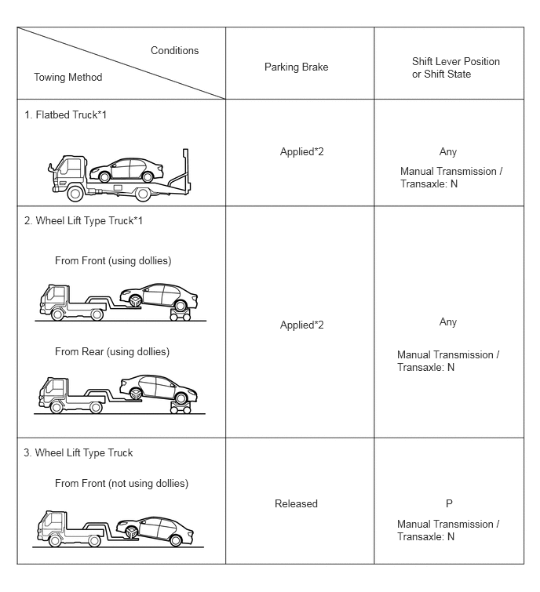NOTICE:
- Do not use any towing method other than those shown above.
- *1: If the vehicle is tilted after parking on a level surface, the braking force may be insufficient as the electric parking brake determines how much braking force to apply by automatically detecting the slope of the road. (w/ Electric Parking Brake System)
HINT:
*2: For the procedure to apply the maximum amount of braking force, refer to Precaution of Electric Parking Brake System.
for HEV Model, Gasoline Model (w/ Electronic Shift Lever System) and Gasoline Model (w/ Stop and Start System):
- If a tow truck is not available, in an emergency the vehicle may be temporarily towed using a cable or chain secured to the emergency towing eyelet(s). This should only be attempted on hard surfaced roads for as short of a distance as possible and at a vehicle speed of 30 km/h (18 mph) or less. A driver must be in the vehicle to steer and operate the brakes. The vehicle's wheels, drivetrain, axles, steering and brakes must be in good condition.
for Gasoline Model (w/o Electronic Shift Lever System) and Gasoline Model (w/o Stop and Start System):
- If a tow truck is not available, in an emergency the vehicle may be temporarily towed using a cable or chain secured to the emergency towing eyelet(s). This should only be attempted on hard surfaced roads for distances of less than 80 km (50 miles), and at speeds below 30 km/h (18 mph). A driver must be in the vehicle to steer and operate the brakes. The vehicle's wheels, drivetrain, axles, steering and brakes must be in good condition.
NOTICE:
If the towing speed exceeds the above limits, or if the vehicle is towed for a long distance or in a backward direction with the front wheels on the ground, the drivetrain may be damaged.
(c) Emergency towing procedure
w/o Electronic Shift Lever System:
- Turn the ignition switch to ON.
- Depress the brake pedal and move the shift lever to N.
- Release the parking brake.
- Release the brake pedal slowly.
w/ Electronic Shift Lever System:
- Turn the ignition switch to ON.
- Depress the brake pedal, move the shift lever to N and confirm that neutral (N) has been selected.
- Release the parking brake.
- Release the brake pedal slowly.
NOTICE:
- Use extreme caution when towing the vehicle. Avoid sudden starts or erratic driving maneuvers which place excessive stress on the emergency towing eyelet and the cables or chains.
- If the hybrid system is off, the power assist for the brakes and steering will not function, making steering and braking more difficult. (for HEV Model)
- Do not turn off the ignition switch. Turning off the ignition switch may result in engagement of the steering lock or the parking lock, resulting in a hazardous situation or accident.
HINT:
w/ Electronic Shift Lever System:
- Neutral (N) cannot be selected if the auxiliary battery is discharged or if it has been disconnected.
- There is a possibility that neutral (N) cannot be selected when parts related to the electronic shift lever system are malfunctioning.
(d) The towing methods shown below are dangerous and can damage the vehicle, so do not use them.

(1) Do not tow the vehicle facing rearward with the front wheels on the ground.
NOTICE:
- If the vehicle is towed facing rearward with the front wheels on the ground, the drivetrain may overheat and be damaged.
- In addition, if the vehicle is equipped with a VSC system, the system may apply the brakes to the rotating wheels.
(2) Do not use a sling-type towing method either from the front or rear.
NOTICE:
If a sling-type tow truck is used, damage may occur to the vehicle body.
PRECAUTIONS FOR TOWING REAR WHEEL DRIVE VEHICLES
(a) Use one of the following methods to tow the vehicle.
(b) If the vehicle has trouble with the chassis or drivetrain, use method 1 (flatbed truck).
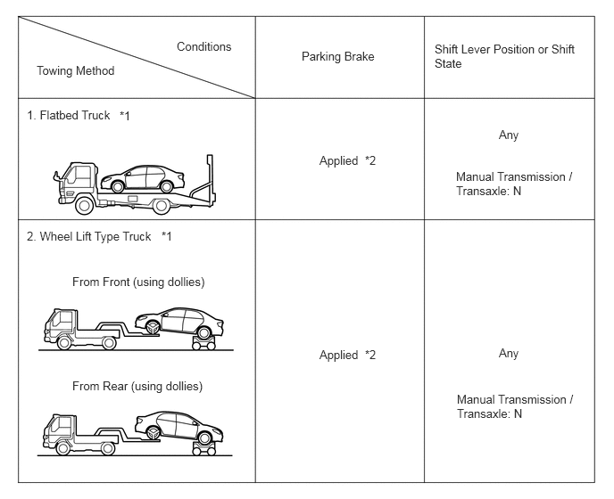NOTICE:
- Do not use any towing method other than those shown above.
- *1: If the vehicle is tilted after parking on a level surface, the braking force may be insufficient as the electric parking brake determines how much braking force to apply by automatically detecting the slope of the road. (w/ Electric Parking Brake System)
HINT:
*2: For the procedure to apply the maximum amount of braking force, refer to Precaution of Electric Parking Brake System.
for HEV Model, Gasoline Model (w/ Electronic Shift Lever System) and Gasoline Model (w/ Stop and Start System):
- If a tow truck is not available, in an emergency the vehicle may be temporarily towed using a cable or chain secured to the emergency towing eyelet(s). This should only be attempted on hard surfaced roads for as short of a distance as possible and at a vehicle speed of 30 km/h (18 mph) or less. A driver must be in the vehicle to steer and operate the brakes. The vehicle's wheels, drivetrain, axles, steering and brakes must be in good condition.
for Gasoline Model (w/o Electronic Shift Lever System) and Gasoline Model (w/o Stop and Start System):
- If a tow truck is not available, in an emergency the vehicle may be temporarily towed using a cable or chain secured to the emergency towing eyelet(s). This should only be attempted on hard surfaced roads for distances of less than 80 km (50 miles), and at speeds below 30 km/h (18 mph). A driver must be in the vehicle to steer and operate the brakes. The vehicle's wheels, drivetrain, axles, steering and brakes must be in good condition.
NOTICE:
If the towing speed or distance exceeds the above limits, or the vehicle is towed in a backward direction with the wheels on the ground, the drivetrain or vehicle may be damaged.
(c) Emergency towing procedure
w/o Electronic Shift Lever System:
- Turn the ignition switch to ON.
- Depress the brake pedal and move the shift lever to N.
- Release the parking brake.
- Release the brake pedal slowly.
w/ Electronic Shift Lever System:
- Turn the ignition switch to ON.
- Depress the brake pedal, move the shift lever to N and confirm that neutral (N) has been selected.
- Release the parking brake.
- Release the brake pedal slowly.
NOTICE:
- Use extreme caution when towing the vehicle. Avoid sudden starts or erratic driving maneuvers which place excessive stress on the emergency towing eyelet and the cables or chains.
- If the hybrid system is off, the power assist for the brakes and steering will not function, making steering and braking more difficult. (for HEV Model)
- Do not turn off the ignition switch. Turning off the ignition switch may result in engagement of the steering lock or the parking lock, resulting in a hazardous situation or accident.
HINT:
w/ Electronic Shift Lever System:
- Neutral (N) cannot be selected if the auxiliary battery is discharged or if it has been disconnected.
- There is a possibility that neutral (N) cannot be selected when parts related to the electronic shift lever system are malfunctioning.
(d) The towing methods shown below are dangerous and can damage the vehicle, so do not use them.

(1) Do not tow the vehicle with only 2 wheels on the ground.
CAUTION:
If the vehicle is towed with only the front wheels on the ground, the steering may move, causing the vehicle to become unstable.
NOTICE:
If the vehicle is towed with only the rear wheels on the ground, the drivetrain may overheat and be damaged.
(2) Do not use a sling-type towing method either from the front or rear.
NOTICE:
If a sling-type tow truck is used, damage may occur to the vehicle body.
PRECAUTIONS FOR TOWING ALL WHEEL DRIVE VEHICLES
(a) Use one of the following methods to tow the vehicle.
(b) If the vehicle has trouble with the chassis or drivetrain, use method 1 (flatbed truck).
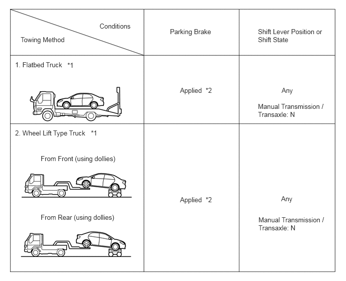NOTICE:
- Do not use any towing method other than those shown above.
- *1: If the vehicle is tilted after parking on a level surface, the braking force may be insufficient as the electric parking brake determines how much braking force to apply by automatically detecting the slope of the road. (w/ Electric Parking Brake System)
HINT:
*2: For the procedure to apply the maximum amount of braking force, refer to Precaution of Electric Parking Brake System.
for HEV Model, Gasoline Model (w/ Electronic Shift Lever System) and Gasoline Model (w/ Stop and Start System):
- If a tow truck is not available, in an emergency the vehicle may be temporarily towed using a cable or chain secured to the emergency towing eyelet(s). This should only be attempted on hard surfaced roads for as short of a distance as possible and at a vehicle speed of 30 km/h (18 mph) or less. A driver must be in the vehicle to steer and operate the brakes. The vehicle's wheels, drivetrain, axles, steering and brakes must be in good condition.
for Gasoline Model (w/o Electronic Shift Lever System) and Gasoline Model (w/o Stop and Start System):
- If a tow truck is not available, in an emergency the vehicle may be temporarily towed using a cable or chain secured to the emergency towing eyelet(s). This should only be attempted on hard surfaced roads for distances of less than 80 km (50 miles), and at speeds below 30 km/h (18 mph). A driver must be in the vehicle to steer and operate the brakes. The vehicle's wheels, drivetrain, axles, steering and brakes must be in good condition.
NOTICE:
If the towing speed exceeds the above limits, or if the vehicle is towed for a long distance or in a backward direction with any of the wheels on the ground, the drivetrain may be damaged.
(c) Emergency towing procedure
w/o Electronic Shift Lever System:
- Turn the ignition switch to ON.
- Depress the brake pedal and move the shift lever to N.
- Release the parking brake.
- Release the brake pedal slowly.
w/ Electronic Shift Lever System:
- Turn the ignition switch to ON.
- Depress the brake pedal, move the shift lever to N and confirm that neutral (N) has been selected.
- Release the parking brake.
- Release the brake pedal slowly.
NOTICE:
- Use extreme caution when towing the vehicle. Avoid sudden starts or erratic driving maneuvers which place excessive stress on the emergency towing eyelet and the cables or chains.
- If the hybrid system is off, the power assist for the brakes and steering will not function, making steering and braking more difficult. (for HEV Model)
- Do not turn off the ignition switch. Turning off the ignition switch may result in engagement of the steering lock or the parking lock, resulting in a hazardous situation or accident.
HINT:
w/ Electronic Shift Lever System:
- Neutral (N) cannot be selected if the auxiliary battery is discharged or if it has been disconnected.
- There is a possibility that neutral (N) cannot be selected when parts related to the electronic shift lever system are malfunctioning.
(d) The towing methods shown below are dangerous and can damage the vehicle, so do not use them.
(1) Do not tow the vehicle with the front or rear wheels on the ground.
NOTICE:
- If the vehicle is towed with the front or rear wheels on the ground, the drivetrain may overheat and be damaged.
- In addition, if the vehicle is equipped with a VSC system, the system may apply the brakes to the rotating wheels.
(2) Do not use a sling-type towing method either from the front or rear.
NOTICE:
If a sling-type tow truck is used, damage may occur to the vehicle body.
EXPRESSIONS OF IGNITION SWITCH
(a) The type of ignition switch used on this model differs depending on the specifications of the vehicle.
The expressions listed in the table below are used in this section.
GASOLINE/DIESEL/LPG/CNG:
|
Expression |
Ignition Switch (Position) |
Engine Switch (Condition) |
|---|---|---|
|
Ignition switch off |
LOCK |
Off (Lock) |
|
Ignition switch ACC |
ACC |
On (ACC) |
|
Ignition switch ON |
ON |
On (IG) |
|
Engine start |
START |
On (Start) |
HEV/PHEV/BEV/FCEV:
|
Expression |
Ignition Switch (Position) |
Power Switch (Condition) |
|---|---|---|
|
Ignition switch off |
LOCK |
Off (Lock) |
|
Ignition switch ACC |
ACC |
On (ACC) |
|
Ignition switch ON |
ON (IG) |
On (IG) |
|
Ignition switch ON (READY) |
START (READY) |
On (Ready) |